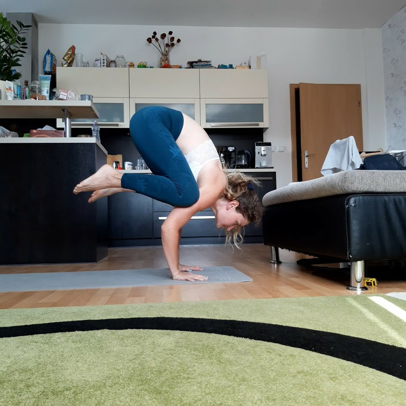
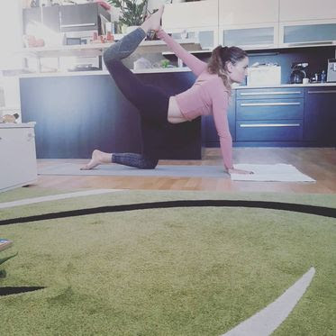

Jóga a já
K józe jsem přišla náhodou asi před 7 lety když jsem se přistěhovala do Prahy. Pár let jsme se jen tak oťukávaly a ikdyž se mi líbila, nějak moc jsem ji nevěnovala pozornost. Na plno jsem se do ní pustila asi před 3 lety. Teď je mojí součástí a život bez ní, si nedokážu představit :).
◄ Pozice vrány nebo jak říkám já: "první fáze létání"
Pozice polovičního luku z kleku ►